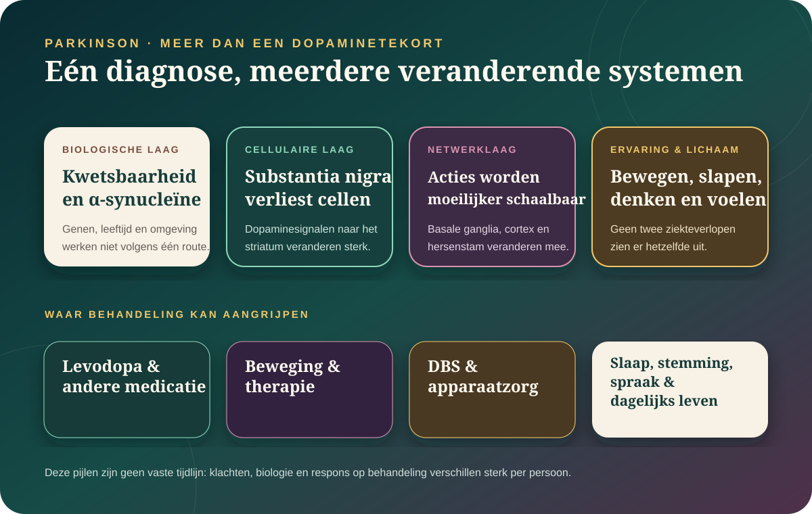

De kern in gewone taal
Parkinson is geen trilziekte en geen simpel dopaminetekort.
Parkinson is een progressieve neurologische aandoening waarbij verschillende hersen- en lichaamssystemen veranderen. Verlies van dopaminerge neuronen in de substantia nigra is belangrijk voor motorische klachten, maar slaap, reuk, darmen, stemming, bloeddruk, spraak en denken kunnen ook geraakt worden.
Bradykinesie — kleiner, trager en moeilijker starten — weegt diagnostisch zwaarder dan tremor alleen.
Niet iedereen trilt, niet iedereen krijgt dezelfde niet-motorische klachten en behandeling is persoonlijk.
Medicatie, therapie, beweging en soms DBS kunnen veel betekenen, maar stoppen de ziekte niet bewezen.
“Mijn hand trilt — heb ik Parkinson?”
Een tremor kan vele oorzaken hebben en Parkinson kan zonder duidelijke tremor beginnen. Artsen letten onder meer op bradykinesie samen met stijfheid, rusttremor of houdingsinstabiliteit, het patroon over tijd en de reactie op behandeling. Ook medicatie, essentiële tremor en andere vormen van parkinsonisme kunnen erop lijken.
Bewegen
Kleiner en trager
Een arm zwaait minder mee, stappen worden korter, schrijven kleiner of knopen kosten meer tijd.
Starten
De intentie is er, de actie hapert
Opstaan, draaien of door een deuropening lopen kan plots moeilijk worden. Dat is geen gebrek aan wil.
Tremor
Vaak in rust, maar niet verplicht
De klassieke rusttremor is herkenbaar, maar afwezigheid sluit Parkinson niet uit.
Variatie
Goede en moeilijke momenten
Medicatie, stress, slaap en taakcontext kunnen zichtbaar veranderen wat op een moment lukt.
Van kwetsbare cellen naar een veranderend netwerk.

Bij Parkinson gaan dopaminerge neuronen in de substantia nigra pars compacta geleidelijk verloren. Daardoor verandert de modulatie van het striatum en de dynamiek van basale-ganglialussen. Tegelijk worden verkeerd gevouwen vormen van het eiwit α-synucleïne vaak aangetroffen. Hoe oorzaak, verspreiding en celverlies precies samenhangen, is nog niet opgelost.
Parkinson kan beginnen buiten wat omstanders als “bewegen” herkennen.
Sommige signalen kunnen jaren vóór duidelijke motorische klachten voorkomen, maar geen enkel signaal voorspelt individueel de diagnose.
Dromen worden beweging.
Bij REM-slaapgedragsstoornis valt de normale spierverlamming tijdens dromen deels weg. Het verhoogt het risico op een synucleïnopathie, maar is niet hetzelfde als Parkinson.
Darmen en bloeddruk doen mee.
Obstipatie, plasklachten, seksuele problemen, zweten en bloeddrukdaling bij opstaan kunnen zwaar wegen.
Stemming, apathie en cognitie.
Depressie, angst, vermoeidheid, hallucinaties of veranderingen in denken kunnen door ziekte, medicatie en omstandigheden worden beïnvloed.
Geen zelftest: reukverlies, obstipatie en slecht slapen komen veel voor zonder Parkinson. Betekenis ontstaat uit het totale patroon en medisch onderzoek.
De diagnose is vooral klinisch — scans beantwoorden gerichte twijfelvragen.
Een neuroloog beoordeelt klachten, neurologisch onderzoek, medicatie, verloop en mogelijke alternatieven. Dopaminetransporterbeeldvorming kan bij bepaalde twijfel onderscheid ondersteunen, maar toont niet rechtstreeks “Parkinson” en bepaalt niet zelfstandig het subtype of tempo.
Seed-amplificatietests kunnen kleine hoeveelheden verkeerd gevouwen α-synucleïne vermenigvuldigen tot een meetbaar signaal. Ze zijn wetenschappelijk veelbelovend, maar worden niet overal routinematig gebruikt en een test moet steeds in klinische context worden geïnterpreteerd.
Levodopa vervangt geen cellen, maar kan beweging sterk verbeteren.
Levodopa kan de bloed-hersenbarrière passeren en wordt in de hersenen omgezet in dopamine. Carbidopa of benserazide beperkt omzetting buiten de hersenen. Andere middelen beïnvloeden receptoren of vertragen afbraak. Keuze en timing hangen af van leeftijd, klachten, bijwerkingen en dagelijks functioneren.
ON
Medicatie werkt merkbaar
Bewegen kan makkelijker worden, maar respons en duur verschillen.
OFF
Effect neemt af
Klachten kunnen vóór een volgende dosis terugkomen. Dat is een behandelprobleem, geen persoonlijke mislukking.
Dyskinesie
Onwillekeurige overbeweging
Kan na langere behandeling optreden en vraagt aanpassing, maar betekent niet automatisch dat levodopa “giftig” is.
Fysiotherapie, training, logopedie en ergotherapie zijn geen extraatjes.
Gerichte oefening kan conditie, lopen, kracht en vertrouwen ondersteunen. Cueing met ritme of visuele lijnen kan soms helpen wanneer interne bewegingsstart hapert. Training moet passen bij vallen, bloeddruk, vermoeidheid, hartgezondheid en ziektestadium.
Intensieve loopbandtraining bleek haalbaar.
Een gerandomiseerde studie bij vroege Parkinson ondersteunde veiligheid en vervolgonderzoek, maar bewees nog niet dat training de ziekte afremt.
Bekijk de SPARX-studie →DBS kan motorische schommelingen verminderen, maar selecteert streng.
Elektroden in meestal STN of GPi geven elektrische stimulatie. DBS kan vooral bij levodoparesponsieve motorische klachten, tremor en schommelingen helpen. Het behandelt niet ieder niet-motorisch probleem, stopt neurodegeneratie niet en brengt chirurgische en neuropsychiatrische risico’s mee.
Bekijk de gerandomiseerde vergelijking met beste medische zorg → · Bekijk de adaptieve-DBS-pilot uit 2024 →
Kunnen nieuwe dopaminecellen opnieuw in het putamen groeien?
Een fase 1/2-studie transplanteerde dopaminerge voorlopercellen uit embryonale stamcellen bij acht mensen met Parkinson.
Cellen in beide putamina
Acht deelnemers kregen een lage of hogere dosis en twaalf maanden afweeronderdrukking.
Vooral veiligheid en haalbaarheid
Zeven bereikten twaalf maanden follow-up; één deelnemer overleed aan een longinfectie. Er waren geen ernstige bijwerkingen toegeschreven aan het celproduct en geen tumorgroei op MRI.
Of het duurzaam en werkzaam is
De studie was klein, open-label en zonder controlegroep. Klinische werkzaamheid kan hieruit niet betrouwbaar worden vastgesteld.
Dit is een belangrijke technische stap richting celvervanging — nog geen beschikbare genezing en geen bewijs dat de rest van de ziektebiologie stopt.
Lees de Nature Medicine-studie uit juli 2026 →
Ook iPS- en hES-afgeleide cellen overleefden transplantatie.
Zeven en twaalf deelnemers kregen dopaminerge voorlopercellen. Veiligheid en PET-signalen waren bemoedigend; open-label fase 1/2-onderzoek kan werkzaamheid niet bewijzen.
iPS-cellen → · hES-cellen →Exenatide remde Parkinson niet aantoonbaar af.
Een grote gerandomiseerde fase-3-studie vond geen ondersteuning voor ziektevertraging. In juni 2026 publiceerde The Lancet bovendien een expression of concern; de uitkomst moet daarom extra voorzichtig worden behandeld.
Bekijk studie en waarschuwing →Begint Parkinson soms in het lichaam en soms in het brein?
Beeldvorming ondersteunt mogelijke “body-first” en “brain-first” trajecten, maar andere studies vinden niet alle voorspelde verschillen. Het model is nog geen klinische indeling.
Ondersteunende studie → · Tegenstem →Nieuwe of snelle neurologische verandering hoort bij een arts.
Geleidelijk toenemende traagheid, stijfheid, tremor, vallen of verandering in spraak verdienen bespreking met de huisarts. Plots scheef gezicht, krachtsverlies, gevoelsverlies, ernstige verwardheid of een acute loopstoornis past niet bij “even Parkinson afwachten” en vraagt urgente beoordeling.
Voor mensen met Parkinson: verander dopaminerge medicatie nooit plots op eigen initiatief. Nieuwe hallucinaties, ernstige slaperigheid, impulscontroleproblemen of flauwvallen horen snel bij het behandelteam.
Waarop dit dossier steunt.
- Gerandomiseerde studie · 2004Fahn e.a. — Levodopa and the progression of Parkinson’s disease
Symptomatische werkzaamheid en de blijvende onzekerheid over ziekteprogressie.
- DBS-RCT · 2009Weaver e.a. — Bilateral DBS versus best medical therapy
Klinische baten en risico’s van DBS bij gevorderde Parkinson.
- Bewegings-RCT · 2018Schenkman e.a. — High-intensity treadmill exercise
Fase-2-onderzoek naar haalbaarheid, veiligheid en motorische uitkomsten.
- Biomarkerstudie · 2023Chahine e.a. — α-synuclein seed amplification
Detectie van geaggregeerd α-synucleïne in centrale en perifere monsters.
- Adaptieve DBS · 2024Oehrn e.a. — Adaptive versus conventional stimulation
Geblindeerde cross-overpilot bij vier mannen; veelbelovend maar zeer klein.
- Celtherapie · 2025Sawamoto e.a. — iPS-derived dopaminergic cells
Fase 1/2 bij zeven deelnemers, primair gericht op veiligheid.
- Celtherapie · 2025Tabar e.a. — hES-derived dopaminergic neurons
Fase 1 bij twaalf deelnemers, zonder gerandomiseerde controlegroep.
- Negatieve fase 3 · 2025/waarschuwing 2026Vijiaratnam e.a. — Exenatide for Parkinson’s disease
Geen aangetoonde ziektevertraging; later voorzien van een expression of concern.
- Celtherapie · juli 2026STEM-PD — human embryonic stem cell-derived dopaminergic cells
Open-label fase 1/2 bij acht mensen; voorlopige veiligheid, geen werkzaamheidsbewijs.
- Subtypenhypothese · 2020Horsager e.a. — Brain-first versus body-first Parkinson’s disease
Multimodale beeldvorming die mogelijke trajecten ondersteunt.
- Tegenstem · 2022Banwinkler e.a. — Gray matter loss in proposed subtypes
Vond niet de voorspelde structurele verschillen; begrenst het subtypeverhaal.
Lees ook het Atlas-kompas en ons bronnenbeleid.